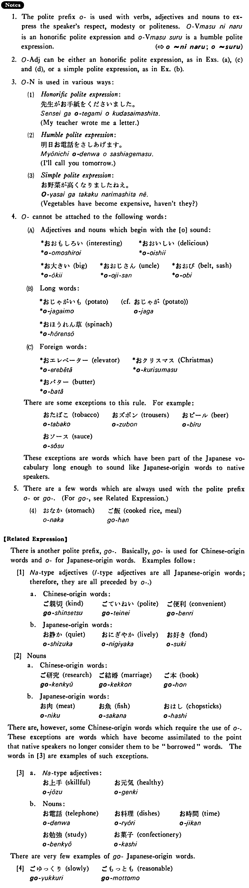

- (ksa).
- 石田先生は英語でお話しになった・なりました。
- Professor Ishida talked in English.
- (ksb).
- 私は昨日山崎先生にお会いした・しました。
- I met Professor Yamazaki yesterday.
- (ksc).
- 今村さんはゴルフがお好きだ・好きです。
- Mr. Imamura likes golf.
- (ksd).
- お飲み物は何が宜しいですか。
- As for drinks, what would be good?
- (a).
- 田村先生は今とてもお忙しい。
- Professor Tamura is very busy now.
- (b).
- 毎日お暑いですね。
- It's hot day after day, isn't it?
- (c).
- 上田先生はテニスがお上手です。
- Professor Ueda is good at tennis.
- (d).
- 宮本さんの奥様はとてもお奇麗だ。
- Mrs. Miyamoto is very pretty.
- (e).
- 野村さんからお電話がありました。
- There was a phone call from Mr. Nomura.
- (f).
- お昼ご飯はもう食べましたか。
- Have you had your lunch yet?
